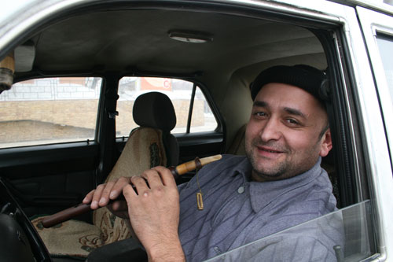

Сегодня проходил мимо остановки и услышал знакомы но необычный для нашего города звук. Огляделся по сторонам. Мелодия доносилась из «Волги» с шашечками.
Водитель играл на дудуке. Подошел. Познакомился.
Грайр Паравян приехал из Армении 20 лет назад и с тех пор работает таксистом. В ожидании пассажира играет на старинном армянском инструменте
Считается, что дудук, как ни один другой инструмент, способен выразить душу армянского народа.
